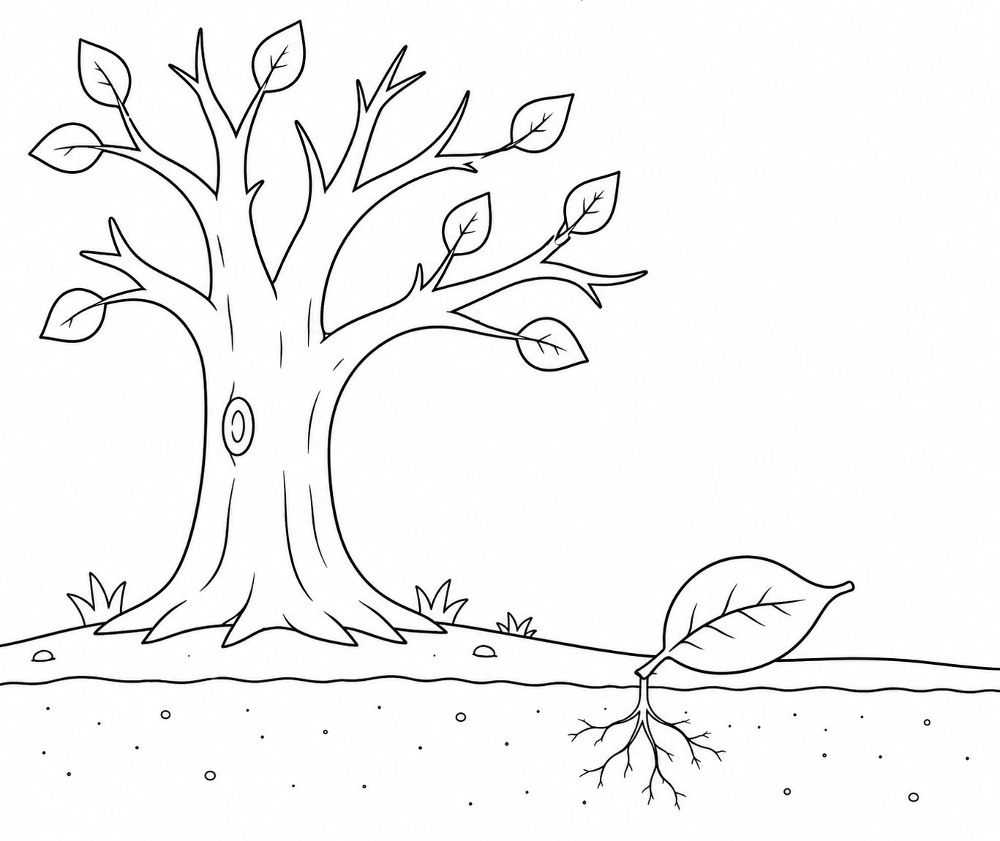

想象一下，好好休息是什么感觉 — 停下来，安定下来，信任身下的土地。
找一个安静的地方 — 室内或室外 — 然后休息几分钟。闭上眼睛，听听周围的声音。你听到了什么？你感觉到了什么？
（PDF版本中有供你记录的空间。）
“休息是什么感觉 — 不是睡觉，而是单纯地停下来，安静地待一会儿？”
让你的思绪沉淀 — 没有标准答案。
“我知道如何休息 — 这本身就是一种力量。”
写下你的名字和日期 — 把它留作提醒：休息不是放弃。而是为即将到来的事物，留出空间。
(PDF版本包含所有活动、绘画空间和证书。)